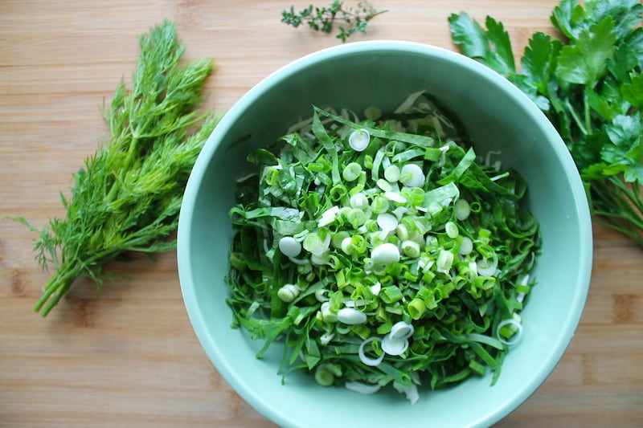

Салат «Сила»

Салат «Сила»
Любимый салат моей мамы! Для тех, кто следит за здоровьем и фигурой - отличный вариант! Это витаминная бомба.
Ингридиенты
- лук зеленый- 1 пучок
- укроп- 1 пучок
- петрушка- 1 пучок
- огурец свежий- 60 гр
- масло оливковое- 5 гр
- 2 вида любого салата- 2 пучока
Процесс приготовления
1 шаг
Всю зелень помыть и нарезать.
2 шаг
Перемешать, заправить маслом